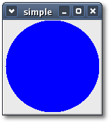
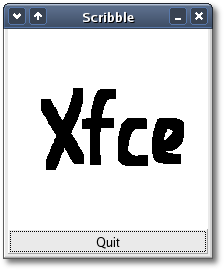

|
The Drawing Area Widget
Table of Contents
- Overview
- Event Handling
- A Simple
Drawing Area
- The
Scribble Example
Overview
The Gtk::DrawingArea widget is used for
creating custom user interface elements. It's essentially a blank
widget with a GDK window you can draw on. A drawing area is created
using one of the following constructors:
DrawingArea();
DrawingArea(int width,
int height);
The
'width' and 'height' are the
default size for the drawing area. If you use the first constructor you
can
set the default size later by calling the Gtk::Widget method:
void set_size_request(int width, int
height);
Since GTK+ 2.0, widgets are double
buffered by
default. 'Double buffered' simply means that all drawing to a widget's
GDK window is diverted to an off-screen buffer, and after the last
"expose_event" the buffer is drawn to the screen. The result is that
users see the window update in one smooth step, and don't see
individual
graphics primitives being rendered. In very simple terms, double
buffered widgets don't flicker, so you
would only turn off double buffering if you had special needs and
really
knew what you were doing.
To turn off double buffering call the following Gtk::Widget method,
with 'double_buffered' set to false:
void
set_double_buffered(bool
double_buffered);
It
should be noted that when you
create a drawing area widget, you are
completely responsible for drawing its contents. If your window is
obscured then uncovered, the widget is sent an "expose_event" signal
and must redraw what
was previously hidden. Having to remember everything that was drawn on
the screen so you can
properly redraw it can, to say the least, be a nuisance. In addition,
it
can be visually distracting if portions of the window are cleared, then
redrawn step by step. The solution to this problem is to use an
off-screen backing pixmap. Instead of drawing directly to the screen,
draw to an image stored in server memory but not displayed, then when
the image changes or new portions of the image are displayed, copy
the relevant portions onto the screen.
After creating a drawing area widget, your application will need to
connect to
one or more of the following signals:
- Mouse and button press
signals, to respond to input from
the user.
- The "realize" signal
to take any necessary actions when the
widget is instantiated on a particular display (such as creating GDK
resources).
- The "configure_event"
signal to take any necessary actions
when the widget changes size.
- The "expose_event"
signal to handle redrawing the contents
of the widget.
To receive keyboard events, you will need
to set the Gtk::CAN_FOCUS flag on the drawing area:
widget->set_flags(Gtk::CAN_FOCUS);
You should probably
draw some user-visible indication that the drawing area is focused. Use
the Gtk::Widget::has_focus() function in your expose event handler to
decide
whether to draw the focus indicator. See Gtk::Style::draw_focus() for
one way
to draw focus.
Expose events are normally delivered when a drawing area first comes
on screen, or when it's covered by another window and then uncovered
(exposed). You can also force an expose event by adding to the "damage
region" of the drawing area's window; Gtk::Widget::queue_draw_area()
and Gdk::Window::invalidate_rect() are equally good ways to do this.
You'll
then get an expose event for the invalid region.
Event
Handling
GTK+
provides widget signals for lower-level
GDK events, such as
the mouse being moved, or a key being pressed. The handlers for these
signals have a parameter which is a reference to a class containing
information about the event. For instance, motion event handlers are
passed a reference to a Gdk::EventMotion class, which looks like this:
class
EventMotion : public EventAny
{
public:
GdkEventMotion* gdk_event_motion() const;
unsigned int time() const;
double x() const;
double y() const;
int x_int() const;
int y_int() const;
double* axes() const;
ModifierTypeField state() const;
bool is_hint() const;
Device* device() const;
double x_root() const;
double y_root() const;
};
All events inherit the following methods from Gdk::EventAny:
Gdk::EventType
type() const;
Gdk::Window* window() const;
The
type() function returns the type of event, in this
case
Gdk::MOTION_NOTIFY, and window() returns the Gdk::Window in which the
event
occurred. The x() and y() functions return the coordinates of the event
as a double and x_int() and y_int() return the coordinates of the event
as an integer. The x_root() and y_root() functions return the
coordinates of the event relative to the root (0, 0) of the screen. The
state() function returns the modifier state when the event occurred
(that is, it
specifies which modifier keys and mouse buttons were pressed), and is
the
bitwise OR of one or more of the following values in the
Gdk::ModifierType enum:
- SHIFT_MASK
- LOCK_MASK
- CONTROL_MASK
- MOD1_MASK
- MOD2_MASK
- MOD3_MASK
- MOD4_MASK
- MOD5_MASK
- BUTTON1_MASK
- BUTTON2_MASK
- BUTTON3_MASK
- BUTTON4_MASK
- BUTTON5_MASK
- RELEASE_MASK
- MODIFIER_MASK
As
with other signals, to determine what
happens
when a GDK event occurs, you can either explicitly connect a signal
handler through a proxy signal function, or you can derive a new widget
class and override one or more of its Gtk::WidgetSignals virtual signal
handlers for the events you are interested in.
You would connect to the "motion_notify_event" using its proxy signal
function like this:
widget->signal_motion_notify_event().connect(sig::mem_fun(this,
&MyWindow::motion_notify_event_handler))
where 'motion_notify_event_handler' has the following prototype:
bool
function(const Gdk::EventMotion& event);
You also need to let
GTK+ know which events you want to be notified about. To do this, call
one of the following Gtk::Widget methods:
void
add_events(Gdk::EventMaskField
events);
void
set_events(Gdk::EventMaskField events);
The
'events' argument is the event mask which determines which events a
widget will receive. It can be one or more OR'd bit values from the
Gdk::EventMask enum:
- EXPOSURE_MASK
- POINTER_MOTION_MASK
- POINTER_MOTION_HINT_MASK
- BUTTON_MOTION_MASK
- BUTTON1_MOTION_MASK
- BUTTON2_MOTION_MASK
- BUTTON3_MOTION_MASK
- BUTTON_PRESS_MASK
- BUTTON_RELEASE_MASK
- KEY_PRESS_MASK
- KEY_RELEASE_MASK
- ENTER_NOTIFY_MASK
- LEAVE_NOTIFY_MASK
- FOCUS_CHANGE_MASK
- STRUCTURE_MASK
- PROPERTY_CHANGE_MASK
- VISIBILITY_NOTIFY_MASK
- ROXIMITY_IN_MASK
- PROXIMITY_OUT_MASK
- SUBSTRUCTURE_MASK
- SCROLL_MASK
- ALL_EVENTS_MASK
Both methods enable the events specified in the event mask, however,
add_events() adds 'events' to the widget's existing event mask, whereas
set_events() replaces the widget event mask with 'events'. Keep in mind
that different widgets have different default event masks, and by
changing the event mask you may disrupt a widget's functionality, so be
careful.
There are a few subtle points that have to
be
observed when calling set_events(). First, it must be
called before the GDK window for a widget is created (that is, before
the widget is realized). In practical terms,
this means you should call it immediately after creating a widget.
Consider using add_events() for widgets that are already realized, or
if you want to preserve the existing event mask. Second, the widget
must have an associated GDK window. For efficiency,
many widget types do not have their own window, but draw in their
parent's window. The following widgets do this:
Gtk::Alignment
Gtk::Arrow
Gtk::AspectFrame
Gtk::Bin
Gtk::Box
Gtk::Button
|
Gtk::CheckButton
Gtk::Fixed
Gtk::Frame
Gtk::Image
Gtk::Label
Gtk::MenuItem
|
Gtk::Notebook
Gtk::Paned
Gtk::RadioButton
Gtk::Range
Gtk::ScrolledWindow
Gtk::Separator
|
Gtk::Table
Gtk::Toolbar
Gtk::VBox
Gtk::HBox
Gtk::VSeparator
Gtk::HSeparator |
Widgets with no GDK
window
To
capture events for these widgets, place them inside an EventBox
widget.
A
Simple Drawing Area
The following code demonstrates using a drawing area to display
a circle in a widget with the foreground color set to blue. Note that
GDK
automatically clears the exposed area to the background color before
sending the expose event, and that drawing is implicitly clipped to the
exposed area.
The source file the this example is <simple.cc>
#include
<xfc/main.hh>
#include <xfc/gtk/drawingarea.hh>
#include <xfc/gtk/style.hh>
#include <xfc/gtk/window.hh>
#include <xfc/gdk/window.hh>
using namespace Xfc;
class Window : public Gtk::Window
{
Gtk::DrawingArea *area;
protected:
bool on_area_expose_event(const
Gdk::EventExpose& event);
public:
Window();
};
Window::Window()
{
area = new Gtk::DrawingArea(100, 100);
area->signal_expose_event().connect(sigc::mem_fun(this,
&Window::on_area_expose_event));
add(*area);
area->show();
}
bool
Window::on_area_expose_event(const Gdk::EventExpose& event)
{
area->get_window()->draw_arc(*area->get_style()->fg_gc(area->get_state()),
// context
0, 0, // x, y,
area->get_allocation().width(), //
width
area->get_allocation().height(), //
height
0, 64 * 360); //
angle1, angle2
return true;
}
int main (int argc, char *argv[])
{
using namespace Main;
init(&argc, &argv);
Window window;
window.signal_destroy().connect(sigc::ptr_fun(&Xfc::Main::quit));
window.show();
run();
return 0;
};
Compiling Simple
If you compiled and installed XFC yourself, you will find the source
code for Simple in the
<examples/howto/drawingarea> source directory along with a Makefile. If
XFC came pre-installed, or you installed it from an RPM package, you
will
find the source code in the
</usr/share/doc/xfcui-X.X/examples/howto/drawingarea> subdirectory. In
this case you will have to create the Makefile yourself (replace X.X
with the
version number of the libXFCui library you have installed).
To create a Makefile for S, add the following lines to a
new text
file
and save it using the name "Makefile":
CC = g++
CFLAGS = -Wall -O2
simple: simple.cc
$(CC) simple.cc -o simple $(CFLAGS) `pkg-config
xfcui-X.X --cflags --libs`
clean:
rm -f *.o simple
If you cut and paste these lines make sure the whitespace before $(CC)
and rm is a tab character. When you
compile and run this program you will see the following window appear:

The
Scribble Example
In this section, we will build a simple drawing
program called Scribble. In the process, we will examine how to
handle mouse events, how to draw in a window, and how to do the drawing
using a backing pixmap. This is a port of an older GTK+ example still
in
the current release. If you ever need to turn double buffering
off, and draw to an off-screen buffer yourself, this example shows you
how.
Since GTK+ 2.0, widgets are double buffered by
default. "Double buffered" simply means that all drawing to a widget's
Gdk::Window is diverted to an off-screen buffer, and after the last
"expose_event" the buffer is drawn to the screen. The result is that
users see the window update in one smooth step, and don't see
individual
graphics primitives being rendered. In very simple terms, double
buffered widgets don't flicker, so you
would only turn off double buffering if you had special needs and
really
knew what you were doing.
Events
For
our drawing program, we want to know when the
mouse button is pressed and when the mouse is moved, so we specify
Gdk::POINTER_MOTION_MASK and Gdk::BUTTON_PRESS_MASK. We also want to
know when we need to redraw our window, so we specify
Gdk::EXPOSURE_MASK. Although we want to be notified via a configure
event when our window size changes, we don't have to specify the
corresponding Gdk::STRUCTURE_MASK flag, because it is automatically
specified for all windows.
It turns out that there is a problem with just specifying
Gdk::POINTER_MOTION_MASK. This will cause the server to add a new
motion
event to the event queue every time the user moves the mouse. Imagine
that it takes us 0.1 seconds to handle a motion event, but the X server
queues a new motion event every 0.05 seconds. We will soon get way
behind with the users drawing. If the user draws for 5 seconds, it will
take us another 5 seconds to catch up after they release the mouse
button! What we would like is to only get one motion event for each
event we process. The way to do this is to specify
Gdk::POINTER_MOTION_HINT_MASK.
When we specify Gdk::POINTER_MOTION_HINT_MASK, the server sends us a
motion event the first time the pointer moves after entering our
window,
or after a button press or release event. Subsequent motion events will
be suppressed until we explicitly ask for the position of the pointer
using the Gdk::Window method:
Gdk::Window*
get_pointer(int *x, int *y,
Gdk::ModifierTypeField *mask) const;
There is another function,
Gtk::Widget::get_pointer() which has a simpler interface, but turns out
not to be very useful, since it only retrieves the position of the
mouse, not whether the buttons are pressed.
In Scribble, we derive a new DrawingArea from Gtk::DrawingArea and
Gtk::WidgetSignals and
override the following virtual signal handlers:
virtual
bool on_expose_event(const Gdk::EventExpose& event);
virtual bool on_configure_event(const Gdk::EventConfigure&
event);
virtual bool on_button_press_event(const Gdk::EventButton&
event);
virtual bool on_motion_notify_event(const Gdk::EventMotion&
event);
We still have to let GTK+ know which events to notify us about. The
code
that does this is:
Gdk::EventMaskField
flags = get_events();
flags |= (Gdk::LEAVE_NOTIFY_MASK | Gdk::BUTTON_PRESS_MASK |
Gdk::POINTER_MOTION_MASK | Gdk::POINTER_MOTION_HINT_MASK);
set_events(flags);
We'll
save the "expose_event" and "configure_event"
handlers for later. The "motion_notify_event" and "button_press_event"
handlers are pretty simple:
bool
DrawingArea::on_button_press_event(const Gdk::EventButton&
event)
{
if (event.button() == 1
&& pixmap)
draw_brush(event.x(), event.y());
return true;
}
bool
DrawingArea::on_motion_notify_event(const Gdk::EventMotion&
event)
{
int x, y;
Gdk::ModifierTypeField state;
if (event.is_hint())
event.window()->get_pointer(&x, &y,
&state);
else
{
x =
(int)event.x();
y =
(int)event.y();
state =
event.state();
}
if (state & Gdk::BUTTON1_MASK
&& pixmap)
draw_brush(x, y);
return true;
}
Creating an off-screen
pixmap
To create an offscreen pixmap, we call the following constructor:
Gdk::Pixmap(const
Gdk::Window&
window, int width, int height);
The 'window' argument specifies the
Gdk::Window that the new pixmap takes some of its properties from. The
'width'
and 'height' arguments specify the size of the pixmap.
The "configure_event"
handler
We create the off-screen pixmap in the "configure_event" handler. This
event is generated whenever the window changes size, including when it
is initially created.
bool
DrawingArea::on_configure_event(const Gdk::EventConfigure&
event)
{
if (pixmap)
pixmap->unref();
pixmap = new Gdk::Pixmap(*get_window(),
get_allocation().width(), get_allocation().height());
pixmap->draw_rectangle(*(get_style()->white_gc()),
0, 0, get_allocation().width(), get_allocation().height());
return true;
}
The call to
Gdk::Drawable::draw_rectangle() clears
the pixmap initially to white. We'll say more about that in a moment.
The "expose_event"
handler
The expose event handler simply copies the relevant portion of
the pixmap onto the screen (we determine the area we need to redraw by
using the event.area() field of the exposure event):
bool
DrawingArea::on_expose_event(const Gdk::EventExpose& event)
{
get_window()->draw_drawable(*(get_style()->fg_gc(get_state())),
*pixmap, event.area(), event.area().x(), event.area().y());
return false;
}
Drawing Primitives
We've now seen how to keep the screen up to date
with our pixmap, but how do we actually draw interesting stuff on our
pixmap? There are a large number of calls in Xfc::Gdk library for
drawing on drawables. A drawable is simply something that can be drawn
upon. It can be a window, a pixmap, or a bitmap (a black and white
image). We've already seen two such calls above,
Gdk::Drawable::draw_rectangle()
and Gdk::Drawable:draw_drawable().
The complete list of Gdk::Drawable methods is:
- draw_point()
- draw_points()
- draw_line()
- draw_lines()
- draw_segments()
- draw_rectangle()
- draw_arc()
- draw_polygon()
- draw_drawable()
- draw_image()
- draw_glyphs()
- draw_layout_line()
- draw_layout()
- draw_pixbuf()
- draw_rgb_image()
- draw_rgb_image_dithalign()
- draw_rgb_32_image()
- draw_rgb_32_image_dithalign()
- draw_gray_image()
- draw_indexed_image()
See the the header file
<xfc/gdk/drawable.hh> for further details on these
methods. These
methods all share the same first argument - a reference to a graphics
context (Gdk::GC).
A graphics context encapsulates information about things such as
foreground and background color and line width. Gdk::GC has a full set
of methods for creating and modifying graphics contexts, but to keep
things simple we'll just use predefined graphics contexts. Each widget
has an associated style (which can be modified in a gtkrc file). This,
among other things, stores a number of graphics contexts. Some examples
of accessing these graphics contexts are:
widget->get_style()->white_gc();
widget->get_style()->black_gc();
widget->get_style()->fg_gc(Gtk::STATE_NORMAL);
widget->get_style()->bg_gc(widget->get_state());
The
fg_gc() and bg_gc() methods take a single parameter, the
Gtk::StateType, which can be
one
of the values from the Gtk::StateType enumeration:
- STATE_NORMAL,
- STATE_ACTIVE,
- STATE_PRELIGHT,
- STATE_SELECTED,
- STATE_INSENSITIVE
For
instance, for Gtk::STATE_SELECTED the default
foreground color is white and the default background color is dark blue.
Our draw_brush() method, which does the actual drawing on the screen,
is then:
void
DrawingArea::draw_brush(double x, double y)
{
Gdk::Rectangle update_rect((int)x - 5,
(int)y - 5, 10, 10);
pixmap->draw_rectangle(*(get_style()->black_gc()),
update_rect);
queue_draw_area(update_rect);
}
After we draw the rectangle representing the brush onto the pixmap, we
call one of the following Gtk::Widget methods:
void
queue_draw_area(int x, int y, int width, int height);
void queue_draw_area(const Gdk::Rectangle& rectangle);
which notifies X that the area given needs to be
updated. X will eventually generate an expose event which will cause
our
expose event handler to copy the relevant portions to the screen.
We have now covered the entire drawing program except for a few mundane
details like creating the main window.
The Complete
Scribble Source Code
The header file for the Scribble example is <scribble.hh>:
#include
<xfc/main.hh>
#include <xfc/gtk/drawingarea.hh>
#include <xfc/gtk/widgetsignals.hh>
#include <xfc/gtk/window.hh>
using namespace Xfc;
class DrawingArea : public Gtk::DrawingArea, protected
Gtk::WidgetSignals
{
Gdk::Pixmap *pixmap;
void draw_brush(double x, double y);
protected:
virtual bool on_expose_event(const
Gdk::EventExpose& event);
virtual bool on_configure_event(const
Gdk::EventConfigure& event);
virtual bool on_button_press_event(const
Gdk::EventButton& event);
virtual bool
on_motion_notify_event(const Gdk::EventMotion& event);
public:
DrawingArea();
virtual ~DrawingArea();
};
class ScribbleWindow : public Gtk::Window
{
public:
ScribbleWindow();
virtual ~ScribbleWindow();
};
and the source file is <scribble.cc>:
#include
"scribble.hh"
#include <xfc/gtk/box.hh>
#include <xfc/gtk/button.hh>
#include <xfc/gtk/style.hh>
#include <xfc/gdk/color.hh>
#include <xfc/gdk/gc.hh>
#include <xfc/gdk/pixmap.hh>
#include <xfc/gdk/window.hh>
// DrawingArea
DrawingArea::DrawingArea()
: Gtk::WidgetSignals(this),
pixmap(0)
{
set_size_request(200, 200);
set_double_buffered(false);
Gdk::EventMaskField flags = get_events();
flags |= (Gdk::LEAVE_NOTIFY_MASK |
Gdk::BUTTON_PRESS_MASK | Gdk::POINTER_MOTION_MASK |
Gdk::POINTER_MOTION_HINT_MASK);
set_events(flags);
}
DrawingArea::~DrawingArea()
{
if (pixmap)
pixmap->unref();
}
bool
DrawingArea::on_expose_event(const Gdk::EventExpose& event)
{
// Redraw the screen from the backing
pixmap
get_window()->draw_drawable(*(get_style()->fg_gc(get_state())),
*pixmap, event.area(), event.area().x(), event.area().y());
return false;
}
bool
DrawingArea::on_configure_event(const Gdk::EventConfigure&
event)
{
// Create a new backing pixmap of the
appropriate size
if (pixmap)
pixmap->unref();
pixmap = new Gdk::Pixmap(*get_window(),
get_allocation().width(), get_allocation().height());
pixmap->draw_rectangle(*(get_style()->white_gc()),
0, 0, get_allocation().width(), get_allocation().height());
return true;
}
bool
DrawingArea::on_button_press_event(const Gdk::EventButton&
event)
{
if (event.button() == 1
&& pixmap)
draw_brush(event.x(), event.y());
return true;
}
bool
DrawingArea::on_motion_notify_event(const Gdk::EventMotion&
event)
{
int x, y;
Gdk::ModifierTypeField state;
if (event.is_hint())
event.window()->get_pointer(&x, &y,
&state);
else
{
x =
(int)event.x();
y =
(int)event.y();
state =
event.state();
}
if (state & Gdk::BUTTON1_MASK
&& pixmap)
draw_brush(x, y);
return true;
}
void
DrawingArea::draw_brush(double x, double y)
{
// Draw a rectangle on the screen
Gdk::Rectangle update_rect((int)x - 5,
(int)y - 5, 10, 10);
pixmap->draw_rectangle(*(get_style()->black_gc()),
update_rect);
queue_draw_area(update_rect);
}
// ScribbleWindow
ScribbleWindow::ScribbleWindow()
{
set_name("Test Input");
Gtk::VBox *vbox = new Gtk::VBox;
add(*vbox);
vbox->show();
// Create the drawing area
DrawingArea *drawing_area = new
DrawingArea;
vbox->pack_start(*drawing_area);
drawing_area->show();
// And a quit button
Gtk::Button *button = new
Gtk::Button("Quit");
vbox->pack_start(*button, false,
false);
button->signal_clicked().connect(sigc::mem_fun(this,
&ScribbleWindow::dispose));
button->show();
}
ScribbleWindow::~ScribbleWindow()
{
}
int main (int argc, char *argv[])
{
using namespace Main;
init(&argc, &argv);
ScribbleWindow window;
window.signal_destroy().connect(sigc::ptr_fun(&Xfc::Main::quit));
window.show();
run();
return 0;
}
Compiling Scribble
If you compiled and installed XFC yourself, you will find the source
code for Scribble in the
<examples/howto/drawingarea> source directory along with a Makefile. If
XFC came pre-installed, or you installed it from an RPM package, you
will
find the source code in the
</usr/share/doc/xfcui-X.X/examples/howto/drawingarea> subdirectory. In
this case you will have to create the Makefile yourself (replace X.X
with the
version number of the libXFCui library you have installed).
To create a Makefile for Scribble, add the following lines to a
new text
file
and save it using the name "Makefile":
CC = g++
CFLAGS = -Wall -O2
scribble: scribble.cc scribble.hh
$(CC) scribble.cc -o scribble $(CFLAGS) `pkg-config
xfcui-X.X --cflags --libs`
clean:
rm -f *.o scribble
If you cut and paste these lines make sure the whitespace before $(CC)
and rm is a tab character. When you
compile and run this program you will see the following window appear,
which you can draw on:

| Copyright
© 2004-2005 The XFC
Development Team |
Top
|
XFC
4.4
|
|